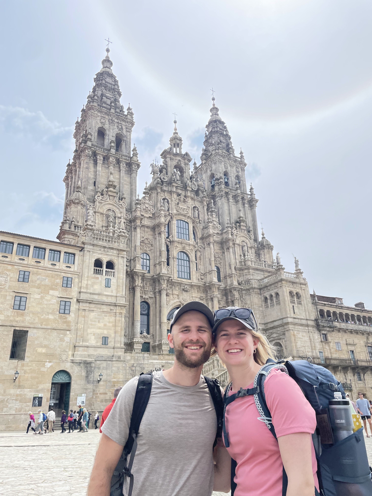

Serving in Galicia Spain
Pointing the lost and weary to Jesus.
We're Joseph & Elsa, preparing to go to Caldas de Reis in Galicia, Spain to minister to pilgrims along the CAmino de Santiago and help in the local church plant. We are sent by Hope Community Church and going with CTEN (Comission to Every Nation)
